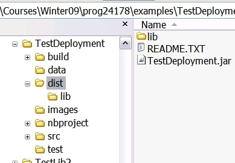
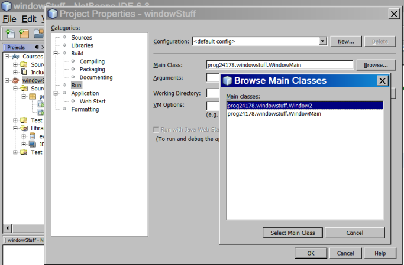
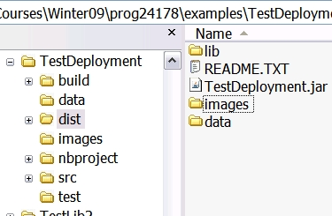
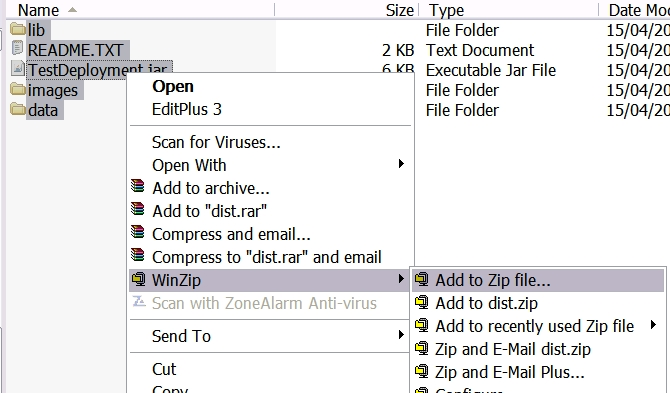
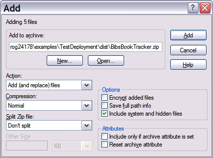
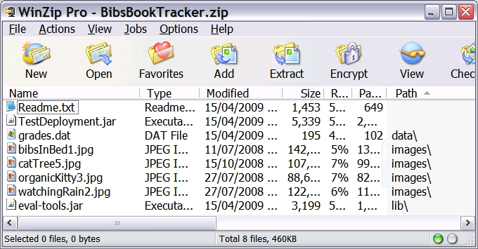

Download the slides for this lesson.
Once you've completed (created, tested, and debugged) an application, you might be ready to deploy it. Deployment in Netbeans is relatively easy! You might want to re-read the lesson on Creating a Jar File before you proceed with this lesson.
To deploy a program, you just collect all the files required to run your program and put them into a single install file, such as a ZIP or RAR (those who are very familiar with these utilties can even make self-extracting files!) To create your Install File, just perform the following steps:
The first step is to create a JAR file for your project. Just right-click the project node and select "Clean and Build" once you've set the properties for your jar file (see previous Creating a Jar File lesson).
When you create a JAR file for an application, Netbeans will update the Manifest.mf file to indicate which class is the "start-up" or main() class. The JAR will also include any libraries you've added to the project's Libraries node.
Once you're JAR file has been created, you should check your project's "dist" folder and see what's there:

Notice the README.TXT file - you can read this if you like, as it contains information about how to run your jar file. You might wish to edit this file if there's anything important your user needs to know about installing or using your application.
You'll also see a "lib" folder. When you made your JAR, Netbeans created this folder and added your project's libraries (anything in your Libraries folder) to it. This ensures that your library code used in this project is included in the application.
NOTE: If your project contains multiple classes with a main() method, you'll need to configure your project properties and make sure the manifest is updated with the name of the startup form or class (the one with the main() method that starts your program):

Check that when you "Clean and Build", your JAR file executes with the proper startup window/class.
If your project includes data files, images, and other important files, you should include these in your dist folder. Just copy them over.
You can see in the image shown earlier that the main project had a "data" folder and an "images" folder. Copy these folders into your "dist" directory:

The last step is to archive your project for distribution. This simply involves taking all the files and folders in the "dist" directory and adding them to a ZIP or RAR file. Do not include the "dist" folder, just the files it contains. Also, make sure when you create your archive, you configure it so that the sub-directories (like "lib") are added "as is". The steps below take you through this process using WinZIP:


You should now see a list of the contents of your archive, similar to the example shown in the image below:

You can now close WinZip. Locate your project .zip file: you will likely need to add it to another archive or file for your final submission.
HINT: Have a friend help you test your program: Put the install file on their computer, unpack the contents, and then try to run the program! (make sure they have a JRE installed!)
You should find these steps are similar when using WinRAR.